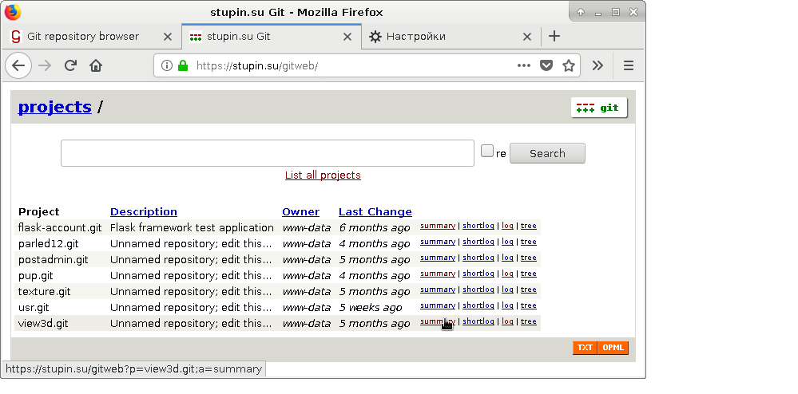

Gitweb - это веб-интерфейс для доступа к git-репозиториям, который написан на Perl и поставляется вместе с исходными текстами git. Gitweb рассчитан на запуск через веб-сервер Apache, но я Apache не использую и для эксперимента решил попробовать настроить Gitweb поверх связки nginx и uWSGI.
Несмотря на то, что в репозитории Debian имеется отдельный пакет с именем gitweb, всё необходимое для запуска gitweb есть в пакете git. Единственное, чего может не хватить - это модуля CGI.pm. Его можно установить из пакета libcgi-pm-perl. Установим необходимые пакеты:
# apt-get install nginx-light uwsgi git libcgi-pm-perl
Первым делом настроим сервер приложений uWSGI для запуска CGI-сценария. Для этого создадим файл /etc/uwsgi/apps-available/gitweb.ini со следующим содержимым:
[uwsgi] procname = uwsgi-gitweb procname-master = uwsgi-gitweb-master plugins = cgi processes = 1 threads = 4 cgi = /usr/share/gitweb/gitweb.cgi cgi-timeout = 5
Теперь нужно подключить использование этого файла:
# cd /etc/uwsgi/apps-enabled/ # ln -s /etc/uwsgi/apps-available/gitweb.ini .
Перезапустим uWSGI, чтобы его новые настройки вступили в силу:
# systemctl restart uwsgi.service
Теперь настроим файл конфигурации самого приложения Gitweb. Я буду настраивать приложение в подкаталоге веб-сервера /gitweb/, поэтому у меня файл конфигурации /etc/gitweb.conf принял следующий вид:
# path to git projects (<project>.git)
$projectroot = "/var/lib/git";
# directory to use for temp files
$git_temp = "/tmp";
# target of the home link on top of all pages
$home_link = $my_uri || "/gitweb/";
# html text to include at home page
$home_text = "indextext.html";
# file with project list; by default, simply scan the projectroot dir.
$projects_list = $projectroot;
# stylesheet to use
@stylesheets = ("/gitweb/static/gitweb.css");
# javascript code for gitweb
$javascript = "/gitweb/static/gitweb.js";
# logo to use
$logo = "/gitweb/static/git-logo.png";
# the 'favicon'
$favicon = "/gitweb/static/git-favicon.png";
# git-diff-tree(1) options to use for generated patches
#@diff_opts = ("-M");
@diff_opts = ();
Наконец, теперь пришла очередь настраивать веб-сервер nginx. Для настройки откроем файл в каталоге /etc/nginx/sites-enabled/, найдём секцию сервера и впишем в неё следующие настройки:
# Gitweb
location /gitweb/static/ {
autoindex off;
alias /usr/share/gitweb/static/;
}
location /gitweb/ {
uwsgi_pass unix:/run/uwsgi/app/gitweb/socket;
include uwsgi_params;
uwsgi_modifier1 9;
uwsgi_param PATH_INFO $1;
uwsgi_param GITWEB_CONFIG /etc/gitweb.conf;
}
Перезагрузим nginx, чтобы добавленные нами настройки вступили в силу:
# systemctl reload nginx.service
Репозитории git, доступ к которым обеспечивает Gitweb, должны располагаться в каталоге /var/lib/git/. Я поместил туда несколько репозиториев для того, чтобы проверить работу приложения. Не забудьте дать права доступа к файлам репозиториев пользователю www-data и группе www-data, например, при помощи следующих команд:
# cd /var/lib/git/ # chown -R www-data:www-data *
В этом каталоге нужно создать подкаталоги с расширением .git, содержащие так называемые "голые" (bare) репозитории. Обычный репозиторий, в котором ведётся разработка, содержит внутри себя текущие версии файлов, над которыми идёт работа, и каталог .git. Каталог .git, по-сути, и является "голым" репозиторием. Для создания "голого" репозитория из обычного можно воспользоваться такими командами:
# cd /var/lib/git # git clone --bare /home/stupin/git/view3d view3d.git
И не забудьте поменять права доступа на "голый" репозиторий:
# cd /var/lib/git # chown -R www-data:www-data view3d.git # chmod -R o= view3d
Теперь можно запустить браузер и проверить доступность приложения. У меня стартовая страница приложения выглядела следующим образом:
Как видно из снимка экрана, ссылки на странице не дружественны для человека, что, впрочем, не мешает выполнять основную задачу, для которой это веб-приложение и было создано: просматривать git-репозитории через браузер.